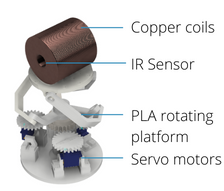
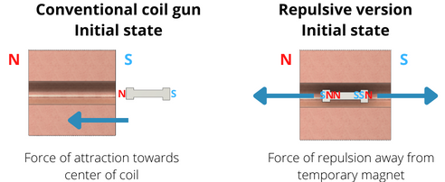

Electromagnetic Launcher
Tags: Electromagnetism, 3D Printing
For my Technological World module in term 2, my team was tasked to
produce a prototype that made use of electromagnetism. Thus we decided
on producing an electromagnetic launcher.

It was quite early on that our team realized that this was a
difficult prototype to produce. Although conceptually it seems simple,
the hard part came about when we had to control when to cut the power
to the electromagnet. Too fast and the projectile does not gain enough
velocity. Too slow and the projectile gets stuck within the coils,
oscillating back to the center. It was by luck that we discovered
another method of launching the projectile that was not constrained by
the tight requirements of the conventional electromagnetic
launcher.
Between one of our tests, we decided to replace
the small piece of iron with small magnets in the coil, hoping that it
would increase the distance we can launch the projectile. However,
these small magnets started rotating once the electromagnet was
switched on, resulting in several failed attempts. Thus, we attached
the magnetic to both sides of the iron piece to ensure the magnets do
not rotate. This did not help much as the extra mass meant the iron
piece could not travel as far. It was during one of these tests that
we were surprised when one of the magnets was launched extremely fast
out of the barrel. Compared to previous tests where the projectiles
were launched around 10 to 15 cm high, this specific test went more
than 50 cm. It was only after multiple tries to recreate the
conditions that it happened and theorizing that we managed to come up
with a theory of how it occurred and how to reproduce it.

Our electromagnetic launcher does not work like conventional
electromagnetic launchers. Conventional electromagnetic launchers work
by attracting the iron piece to move forward and switching off the
field when the iron piece is almost out. Our electromagnetic launcher
does not work like conventional electromagnetic launchers. The
electromagnet induces a magnetic field in the iron piece, turning the
iron piece into an electromagnet. The magnets attached to the iron
piece are orientated in a way such that it opposes the poles of this
new electromagnet. The force of repulsion from the electromagnet and
the magnets result in the magnet being expelled from the coil. The
electromagnet does not need to be switched off immediately as when the
magnet exits the coil, the pole of the magnet is still repelling the
magnetic coil, resulting in further repulsion. The reason we used
magnets on either end was that we realized if we ensured the magnet on
the back end locked in place, the force of repulsion from the magnet
at the back is transferred to the magnet at the front through the iron
piece, resulting in even faster launch velocities. When this occurred
we were able to shoot the magnet up to 1.1m high.

However, in the end we were only able to calculate and predict
empirically how fast we can launch the magnet and were not able to
figure out the formulas for the repulsion of the magnet as we did not
know how to calculate the force of repulsion that was generated when
the two magnets were touching. Even so, we can predict that although
this method was able to launch projectiles very quickly without much
stringency on time, the projectiles need to have their own magnetic
field. Rare earth magnets are not the best choice for these
applications as every time they are launched they will experience a
sudden change in magnetic field in the opposite direction. The result
of this would be it being demagnetised extremely quickly. As such,
electromagnets should also be used for the projectile. This means
higher power consumption but the electromagnets only need to be on for
a short while from the start to after it exits the coil.